Lecture 1 ★
Video of expert so that you can understand easly
|
|
Timestamps:
00:00 Introduction to the Web Development Course
02:23 What is the Internet?
03:53 How is data transferred?
04:48 What is IP Address
07:28 How to access a website
10:41 Who assigns the IP Address?
12:30 Concept of DNS
16:41 In-depth Working of DNS
20:33 Problems in Data Transfer and MAC Address
28:44 What is Port Numbers
37:08 IPv4 & IPv6
43:23 MAC Address Format
48:35 Port Number Format
50:26 Local Area Network, Switch & Router
59:57 Public and Private Addresses
01:09:48 Modern Routers
01:14:04 What is a VPN?
01:14:20 What is Web Development?
01:23:53 What is the MERN Stack?
01:29:42 Who is a Full-Stack Developer?
01:29:52 Wrapping Up the Video
|
HOW Does Internet Work?

I have explained how does internet works in 5 principles.
Principle 1: The Need to Share Information
- We have information on Computer A and want it on Computer B, which is not in the same room.
- The simplest way is to physically carry the information (e.g., with a USB stick).
- This works, but it is slow and doesn't scale.
- We need a direct electronic connection between the computers.
- A cable (like Ethernet or fiber optic) can connect Computer A and B.
- Electrical signals or pulses of light can be sent through the cable.
- We agree on a code:
- High voltage = "1"
- Low voltage = "0"
- This creates the most basic network, a direct link, allowing computers to send bits (1s and 0s).
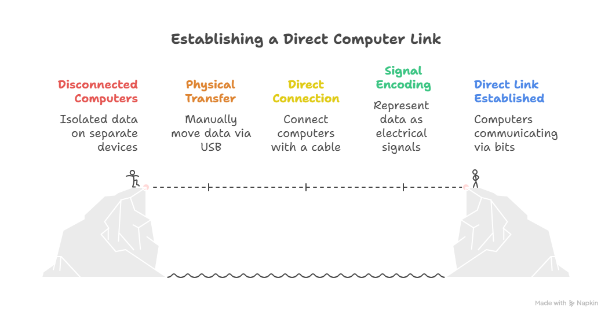
Principle 2: The Problem of Scale
- Works fine for two computers communicating directly.
- With three computers (A, B, C):
- Need cables from A → B, B → C, and A → C.
- With four computers:
- Need 6 cables.
- With 100 computers:
- Need 4,950 cables.
- Problem: Connecting every machine to every other machine directly does not scale and is physically impractical.
- Solution: Use a central device (Switch):
- Every computer connects to the switch.
- If Computer A wants to communicate with Computer C, it sends the message to the switch.
- The switch forwards the message only to Computer C.
- This setup creates a Local Network (LAN):
- Computers in close proximity (like in an office or home) can communicate efficiently.
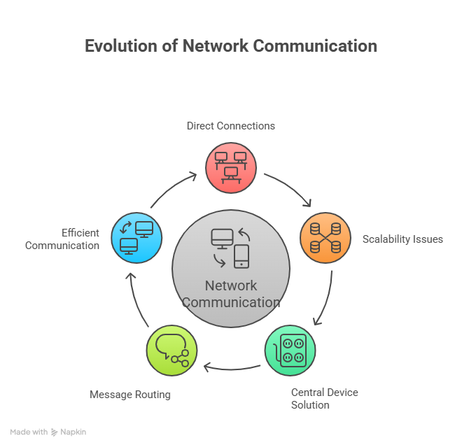
Principle 3: The Problem of Connecting Networks
- Our office has a Local Network (LAN).
- Another office across town also has its own LAN.
- Problem: We cannot run a direct wire from every computer in our office to every computer in theirs—scaling fails again.
- Solution: Connect the networks themselves, not individual computers.
- Introduce a Router:
- A special computer connected to both networks.
- Its job is to pass messages (or "route" traffic) between networks.
- Connecting a third network:
- Simply connect our router to their router.
- This allows a large, interconnected web of networks.
- Fundamental principle of the Internet:
- The Internet is a "network of networks."
- It consists of millions of private and public local networks connected via routers.
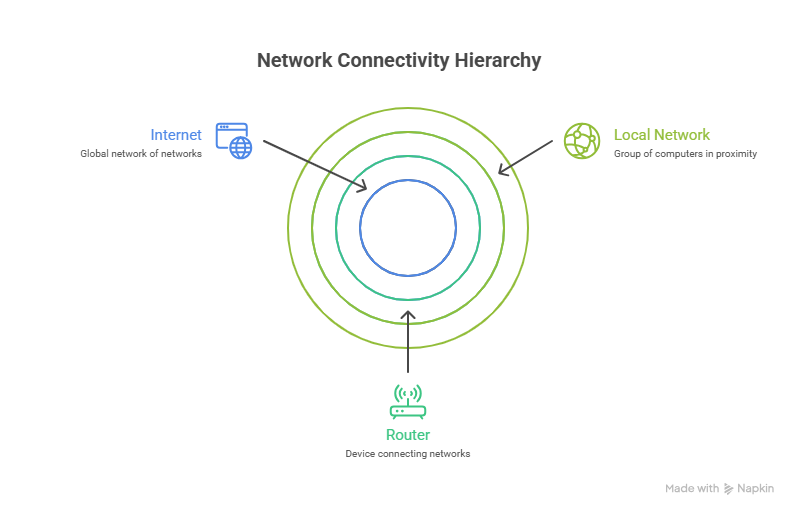
Principle 4: The Need for Unique Addresses
- We have built a global web of interconnected networks. If I'm on my computer in my office, how do I send a message to a specific server in another country?
- There are millions of computers. We need a unique address for every single device.
- This gives rise to the need for a universal addressing system.
- Just like the postal service needs a unique street address for every house in the world, our network of networks needs a unique address for every connected device.
- This is the reason the IP Address (Internet Protocol Address) exists:
- It is a unique label (e.g., 142.250.184.142) assigned to each device.
- When a router sees a message, it looks at the destination IP address and decides which network to forward it to next.
- Routers don't know the full path; they only know the next best "hop" to send the message closer to its final destination.
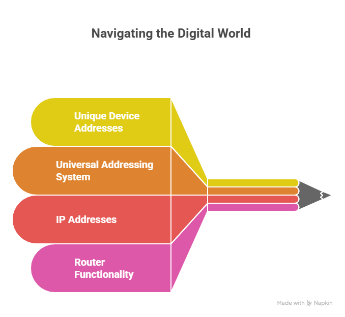
Principle 5: The Problem of Reliability and Fairness
- If I want to send a large file, like a 1-hour video, it is a huge stream of data. If I try to send it all at once:
- I would completely monopolize the connection, and no one else could send anything until my video was done.
- If even a single bit of information gets corrupted during the transfer, the entire file is ruined, and I have to start over from the beginning.
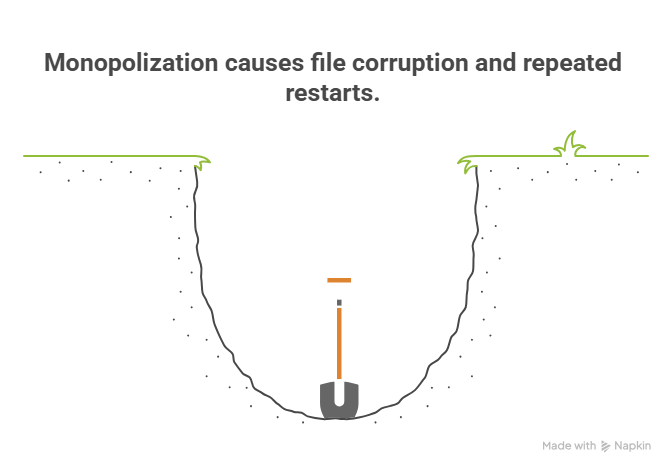
- This is inefficient and unreliable. The logical solution is to break the large file into many thousands of small, numbered pieces called Packets.
- Each packet is like a tiny envelope. It contains:
- A small piece of the data (a "payload").
- The destination IP address (where it’s going).
- The sender's IP address (so they can reply).
- A number, so the receiving computer knows how to reassemble them in the correct order (e.g., "Packet 1 of 5,000").
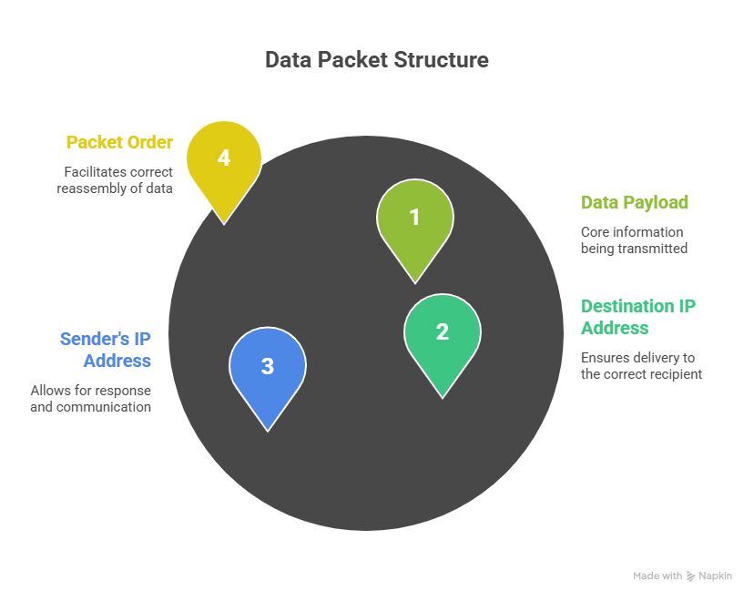
- Packets can travel independently across the internet, sometimes even taking different routes.
- The receiving computer gathers all the packets, checks if any are missing (and requests them again if they are), and reassembles them in the correct order to recreate the original file.
- This system of rules for addressing, breaking down, sending, and reassembling data is called a Protocol. The main one used on the internet is TCP/IP (Transmission Control Protocol / Internet Protocol).
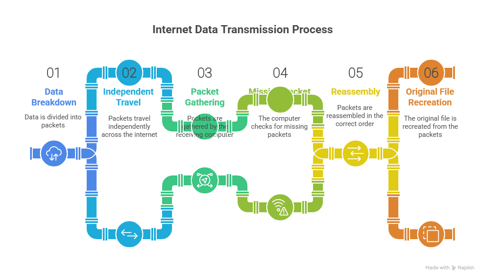
IP Address
IPv4 (Internet Protocol version 4)
- IPv4 is the classic IP address format everyone is used to seeing.
- Structure:
- It is a 32-bit number.
- To make it readable for humans, it is divided into four 8-bit sections, written as decimal numbers from 0 to 255.
- Example: 172.217.16.142 (one of Google's addresses)
- The Big Problem (The Why):
- A 32-bit number means there is a hard limit on the total number of possible addresses: 232, which is about 4.3 billion.
- When the internet was designed, 4.3 billion seemed like an infinite number.
- With the explosion of laptops, phones, servers, smart watches, and even smart refrigerators, we quickly realized we would run out.
- This scarcity is the single most important reason we have public and private IPs.
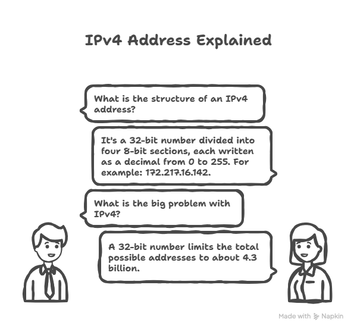
Public IP Address
- A Public IP address is your global, unique address on the internet.
- Analogy: The company's main, public phone number.
- Uniqueness: It must be globally unique. No two devices on the internet can have the same public IP address at the same time.
- Purpose: To be reachable from anywhere in the world. This is the address that web servers, email servers, and any other public service use.
- Assignment: It is assigned to you by your Internet Service Provider (ISP) (e.g., Comcast, AT&T). You don't control it; you lease it from them.
- Who has one? Your home router has one. The server hosting google.com has one. The server hosting Netflix has one.
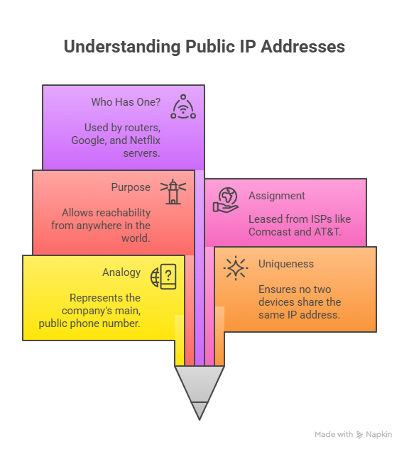
- When you go to a site like whatismyip.com, it shows the Public IP address of your router. From the internet's perspective, your entire home network looks like a single device with that one public address.
Private IP Address
- A Private IP address is a local address used only within your own private network (e.g., your home Wi-Fi, your office network).
- Analogy: The employee's private, 4-digit extension number.
- Uniqueness: It only needs to be unique on your local network. For example, my laptop can have the address 192.168.1.100 on my home Wi-Fi, and your laptop can have the exact same address on your home Wi-Fi. They don't conflict because they are in separate, private networks.
- Purpose: To allow devices on the same local network to communicate with each other without needing a globally unique address for each one. For example, your laptop talks to your printer using private IPs, and your phone streams to your Chromecast using private IPs.
- Assignment: It is assigned to your devices by your own router.
- Reserved Ranges: The internet authorities have reserved specific ranges of addresses just for private networks:
- 10.0.0.0 to 10.255.255.255 (used by large corporations)
- 172.16.0.0 to 172.31.255.255 (used by medium-sized networks)
- 192.168.0.0 to 192.168.255.255 (most common for home networks)

IPv6 (Internet Protocol version 6)
- IPv6 is the next generation of the Internet Protocol. Its primary purpose is to solve the address exhaustion problem of IPv4.
- Address Size:
- IPv4 uses a 32-bit address, giving us approximately 4.3 billion unique addresses.
- IPv6 uses a 128-bit address.
- The difference between 32-bit and 128-bit is exponential, not just 4x.
- The number of possible IPv6 addresses is 2128, which is roughly 340,000,000,000,000,000,000,000,000,000,000,000,000 (340 undecillion).
- IPv6 Address Format:
- Because it is so long, IPv6 uses hexadecimal (numbers 0-9 and letters a-f) instead of decimal numbers.
- An example of a full IPv6 address: 2001:0db8:85a3:0000:0000:8a2e:0370:7334
- It is broken down into eight groups of four hexadecimal characters.
- The groups are separated by colons (:).

MAC Address (Media Access Control Address)
- A MAC Address is a unique, permanent serial number burned into every network-capable piece of hardware (e.g., your laptop's Wi-Fi card, your phone, smart TV, or network port on your desktop).
- It can be used to track devices. If someone gets your IP while you are offline, they can potentially track messages to your device.
- A MAC address is a 48-bit number. To make it readable for humans, it is typically written as 12 hexadecimal digits.
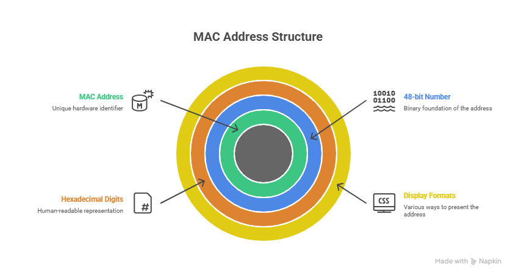
- The most common display formats are:
- Colon-Separated (Most Common): 3C:22:FB:A3:B4:C5
- Hyphen-Separated (Common on Windows): 3C-22-FB-A3-B4-C5
- Period-Separated (Used by Cisco and other network gear): 3c22.fba3.b4c5
- No Separators (Less Common): 3C22FBA3B4C5
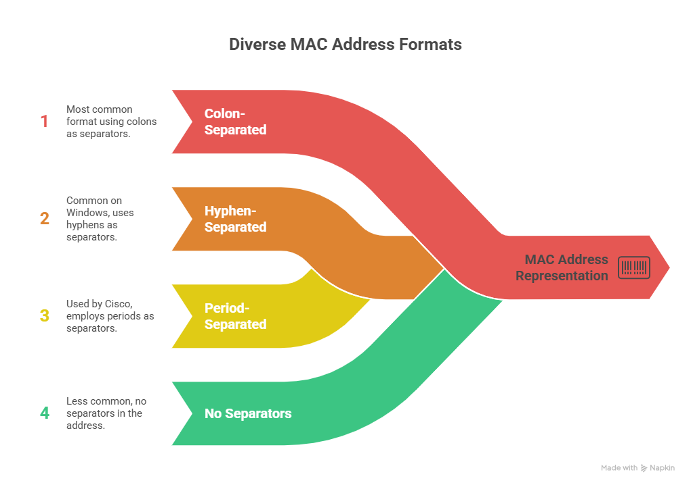
How to Find MAC Address on Windows
| Step |
Action / Command |
| 1 |
Open Command Prompt:
- Click the Start Menu.
- Type cmd and press Enter.
- (Alternatively, press Win + R, type cmd, and press Enter.)
|
| 2 |
To see all network details including MAC addresses, type the following command and press Enter:
ipconfig /all
|
| 3 |
If you only want to see MAC addresses without all other details, type:
getmac /v
|
Port Number
- Port numbers are numbers between 0 and 65535 that identify specific applications or services on a device.
- They work together with IP addresses to make sure network traffic goes to the correct service, like:
- HTTP uses port 80
- HTTPS uses port 443
- A port number is a 16-bit unsigned integer, which means:
- 16-bit: The number is stored using 16 binary digits (1s and 0s).
- Unsigned: The number cannot be negative; only positive values are allowed.
- Because it is 16-bit, the total number of possible ports is 216 = 65,536.
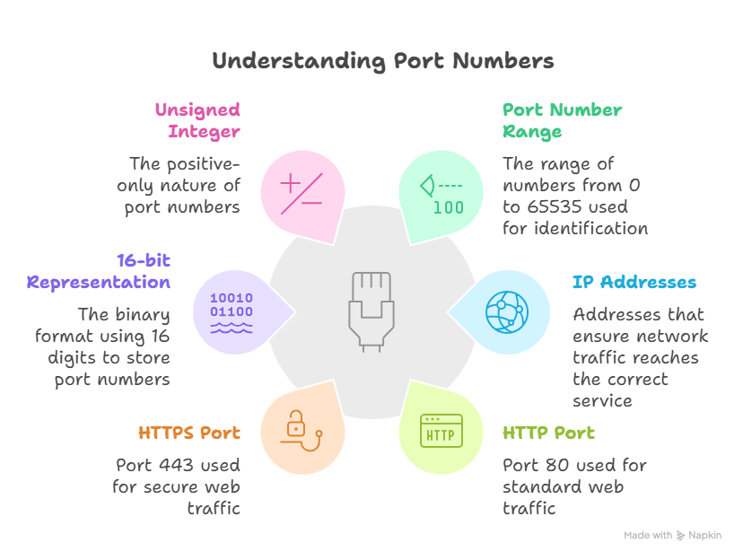
Practical Port Categories
| Category |
Range |
Controlled By |
Privileges / Notes |
Key Examples |
| Well-Known Ports |
0 - 1023 |
Strictly managed by IANA |
Requires administrator (root/sudo) privileges to run a program that listens on these ports |
21: FTP
22: SSH
25: SMTP
53: DNS
80: HTTP
443: HTTPS
|
| Registered Ports |
1024 - 49151 |
Less strict; can request a port from IANA |
Do not need administrator privileges; "user space" for applications |
3000: React/Node.js development server
3306: MySQL
5432: PostgreSQL
27017: MongoDB
8080: Alternative web server port
|
| Dynamic / Private / Ephemeral Ports |
49152 - 65535 |
No one; used for temporary/private purposes |
Automatically assigned by OS for client-side source ports; never configured for servers |
Used by web browsers or client applications to make temporary connections |

DNS (Domain Name System)
DNS is the global, distributed system that translates human-friendly domain names into computer-friendly IP addresses. Without it, you would have to memorize hundreds of IP addresses to browse the web.
Step 1: Checking the Local Cache (Do I already know this?)
- Browser Cache: The browser keeps a short-term memory of recently visited websites. If you visited google.com five minutes ago, the answer is probably here.
- Operating System (OS) Cache: If the browser doesn't have the IP, the OS (Windows, macOS, Linux) checks its own cache.
- Router Cache: Some routers also maintain their own DNS cache.
If the IP address is found in any of these caches, the process stops, and your browser immediately connects to the IP address. This is why websites you visit often load very quickly.
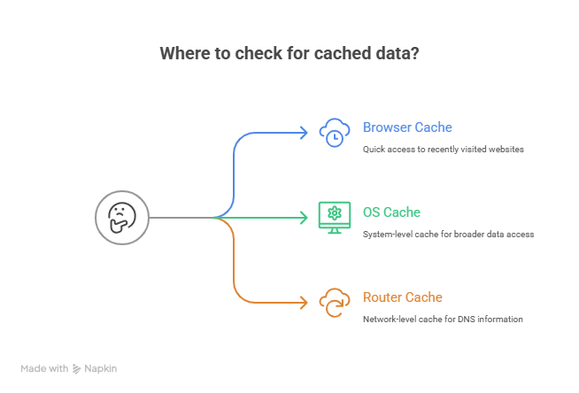
Step 2: The Recursive Resolver (Asking for Help)
- If the IP address is not found in any local cache, your computer asks for help from a Recursive DNS Resolver.
- Who is this? Usually a server run by your ISP. You can also use public resolvers like:
- Google DNS: 8.8.8.8
- Cloudflare DNS: 1.1.1.1
- What does "Recursive" mean? The server does all the work to find the IP address for you. It searches through the DNS hierarchy until it finds the answer.
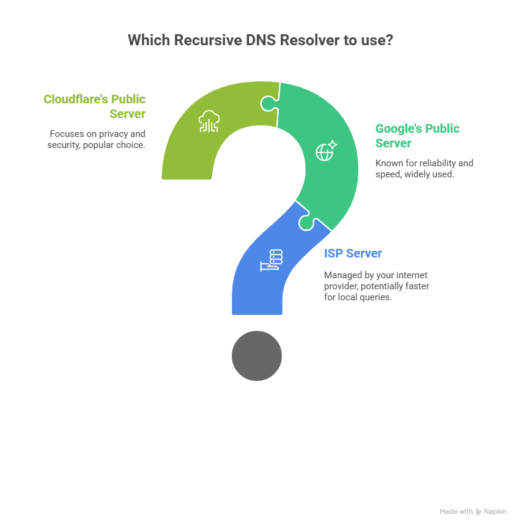
Step 3: The Hierarchical Search (The Global Phonebook)
The Recursive Resolver doesn't know every IP address. It uses the global DNS system, which is like a giant hierarchy, and searches step by step from top to bottom:
- The Root Servers:
- The resolver first asks one of the 13 logical Root Servers in the world.
- It doesn’t ask for the full IP. It asks: "Where can I find the servers that manage the .com domain?"
- The Root Server replies: "I don’t know the IP for google.com, but here is the address of the .com TLD servers."
- The resolver then asks a Top-Level Domain (TLD) server for .com.
- It asks: "Where are the servers that manage google.com?"
- The TLD server replies: "I don’t know the exact IP for www.google.com, but here are the authoritative servers for google.com (e.g., ns1.google.com)."
- The Authoritative Name Server:
- The resolver finally asks one of Google’s Authoritative Name Servers.
- This server is the source of truth for google.com.
- It replies with the final answer: "The IP address for www.google.com is 142.250.72.206."
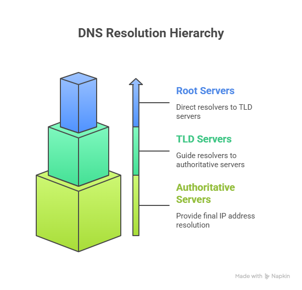
The TLD Servers:
Step 4: The Journey Back
- The Authoritative Name Server sends the IP address back to the Recursive Resolver.
- The Recursive Resolver stores (caches) this answer for a certain time, called TTL (Time-To-Live). This way, future requests for the same domain are answered quickly without repeating the full search.
- The Recursive Resolver sends the IP address back to your computer's operating system.
- Your operating system gives the IP address to your browser, so it can connect to the website.
Step 5: The Final Connection
- Your browser now has the IP address of the website.
- It opens a direct connection to the IP address (e.g., 142.250.72.206) on the correct port (e.g., port 443 for HTTPS).
- The browser requests the webpage: "Please send me the webpage for www.google.com."
- The DNS process is now complete.